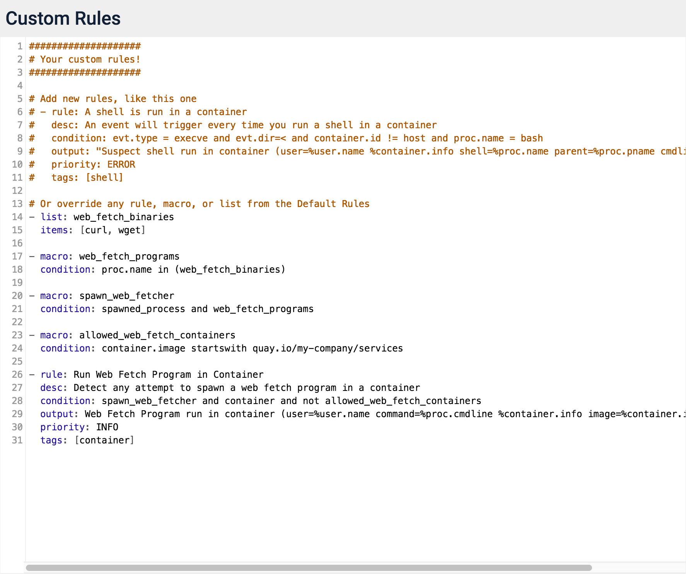
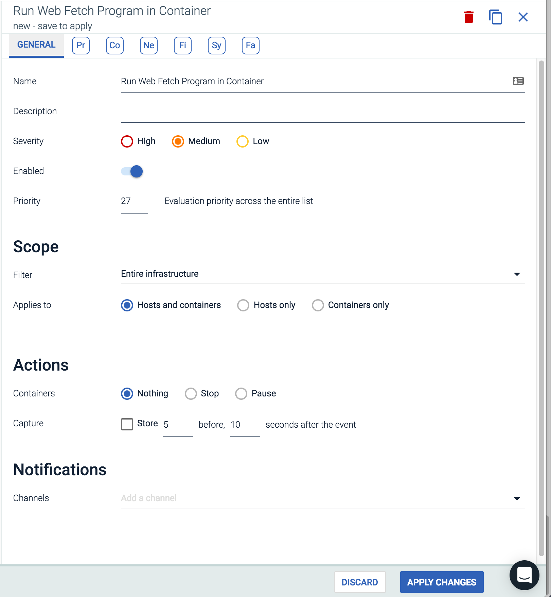
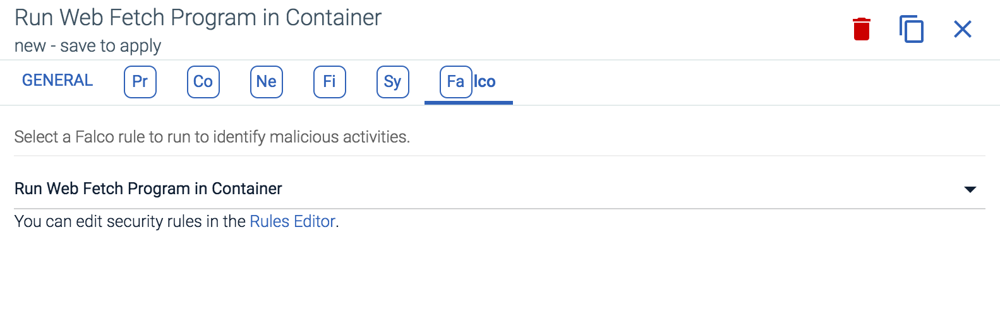
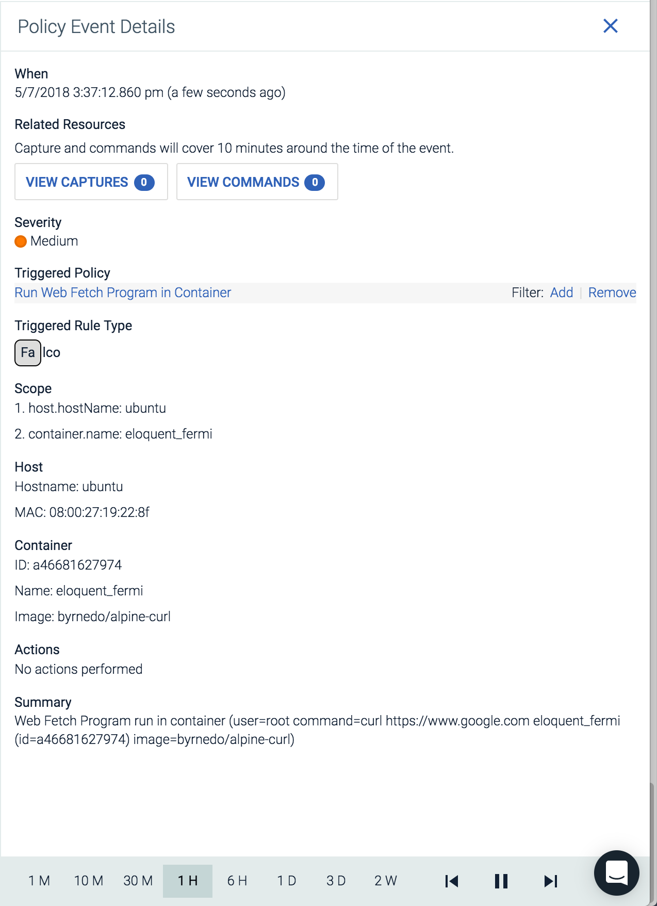

Policy Creation Walkthrough
The example walkthrough below covers creating a new Sysdig Secure policy, and the underlying Falco rules, to address the following use case:
Prevent web fetch programs from within a container.
Contents
Name the Web Fetch Programs
The first step in the walkthrough is to create a list and macro in the Falco Rules editor, that name the programs that count as web fetch programs. In this example, binaries are used to name programs, and programs refers to a condition that compares proc.name to a list of binaries.
Note
Adding parentheses around the condition field of each macro is considered best practice, as it ensures the values are always treated as a single unit.
- list: web_fetch_binaries items: [curl, wget] - macro: web_fetch_programs condition: (proc.name in (web_fetch_binaries))
Capture Web Fetch Spawns
The second step is to write a macro that captures exec of a web fetch program. The example below uses the existing spawned_process macro:
- macro: spawn_web_fetcher condition: (spawned_process and web_fetch_programs)
Define Exceptions
The third step is to write a macro that adds the ability to name a set of exceptions for the rule:
- macro: allowed_web_fetch_containers condition: (container.image startswith quay.io/my-company/services)
Define the Rule
The fourth step is to create the rule, using all of the macros created earlier in the walkthrough:
Note
The container macro restricts this rule to apply only to containers.
- rule: Run Web Fetch Program in Container desc: Detect any attempt to spawn a web fetch program in a container condition: spawn_web_fetcher and container and not allowed_web_fetch_containers output: Web Fetch Program run in container (user=%user.name command=%proc.cmdline %container.info image=%container.image) priority: INFO tags: [container]
Once complete, the example rule should look like the following in the Sysdig Secure custom Falco rules panel:
|  |
Create the Policy
The fifth step is to create the Sysdig Secure policy associated with the new Falco rule:
|  |
|  |
Verify Policy
Finally, verify the policy works correctly. For the walkthrough example, the following command should generate a policy event:
user@host:~$ docker run --rm byrnedo/alpine-curl https://www.google.com
|  |